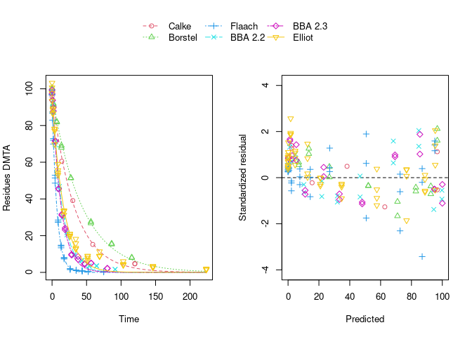
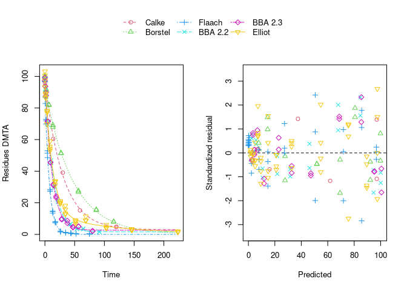
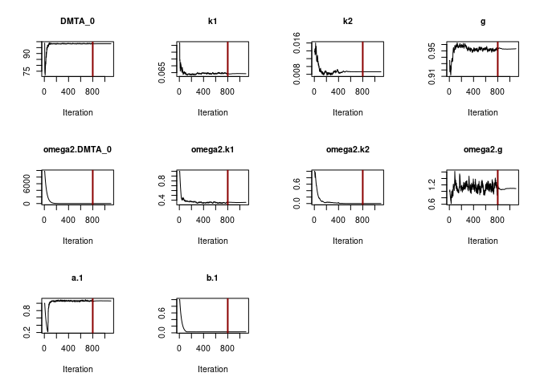

Example evaluations of the dimethenamid data from 2018
Johannes Ranke
Last change 27 September 2021, built on 05 Okt 2021
Source:vignettes/web_only/dimethenamid_2018.rmd
dimethenamid_2018.rmdWissenschaftlicher Berater, Kronacher Str. 12, 79639 Grenzach-Wyhlen, Germany
Introduction
During the preparation of the journal article on nonlinear mixed-effects models in degradation kinetics (Ranke et al. 2021) and the analysis of the dimethenamid degradation data analysed therein, a need for a more detailed analysis using not only nlme and saemix, but also nlmixr for fitting the mixed-effects models was identified, as many model variants do not converge when fitted with nlme, and not all relevant error models can be fitted with saemix.
This vignette is an attempt to satisfy this need.
Data
Residue data forming the basis for the endpoints derived in the conclusion on the peer review of the pesticide risk assessment of dimethenamid-P published by the European Food Safety Authority (EFSA) in 2018 (EFSA 2018) were transcribed from the risk assessment report (Rapporteur Member State Germany, Co-Rapporteur Member State Bulgaria 2018) which can be downloaded from the Open EFSA repository https://open.efsa.europa.eu/study-inventory/EFSA-Q-2014-00716.
The data are available in the mkin package. The following code (hidden by default, please use the button to the right to show it) treats the data available for the racemic mixture dimethenamid (DMTA) and its enantiomer dimethenamid-P (DMTAP) in the same way, as no difference between their degradation behaviour was identified in the EU risk assessment. The observation times of each dataset are multiplied with the corresponding normalisation factor also available in the dataset, in order to make it possible to describe all datasets with a single set of parameters.
Also, datasets observed in the same soil are merged, resulting in dimethenamid (DMTA) data from six soils.
library(mkin, quietly = TRUE)
dmta_ds <- lapply(1:7, function(i) {
ds_i <- dimethenamid_2018$ds[[i]]$data
ds_i[ds_i$name == "DMTAP", "name"] <- "DMTA"
ds_i$time <- ds_i$time * dimethenamid_2018$f_time_norm[i]
ds_i
})
names(dmta_ds) <- sapply(dimethenamid_2018$ds, function(ds) ds$title)
dmta_ds[["Elliot"]] <- rbind(dmta_ds[["Elliot 1"]], dmta_ds[["Elliot 2"]])
dmta_ds[["Elliot 1"]] <- NULL
dmta_ds[["Elliot 2"]] <- NULLParent degradation
We evaluate the observed degradation of the parent compound using simple exponential decline (SFO) and biexponential decline (DFOP), using constant variance (const) and a two-component variance (tc) as error models.
Separate evaluations
As a first step, to get a visual impression of the fit of the different models, we do separate evaluations for each soil using the mmkin function from the mkin package:
f_parent_mkin_const <- mmkin(c("SFO", "DFOP"), dmta_ds,
error_model = "const", quiet = TRUE)
f_parent_mkin_tc <- mmkin(c("SFO", "DFOP"), dmta_ds,
error_model = "tc", quiet = TRUE)The plot of the individual SFO fits shown below suggests that at least in some datasets the degradation slows down towards later time points, and that the scatter of the residuals error is smaller for smaller values (panel to the right):

Using biexponential decline (DFOP) results in a slightly more random scatter of the residuals:

The population curve (bold line) in the above plot results from taking the mean of the individual transformed parameters, i.e. of log k1 and log k2, as well as of the logit of the g parameter of the DFOP model). Here, this procedure does not result in parameters that represent the degradation well, because in some datasets the fitted value for k2 is extremely close to zero, leading to a log k2 value that dominates the average. This is alleviated if only rate constants that pass the t-test for significant difference from zero (on the untransformed scale) are considered in the averaging:

While this is visually much more satisfactory, such an average procedure could introduce a bias, as not all results from the individual fits enter the population curve with the same weight. This is where nonlinear mixed-effects models can help out by treating all datasets with equally by fitting a parameter distribution model together with the degradation model and the error model (see below).
The remaining trend of the residuals to be higher for higher predicted residues is reduced by using the two-component error model:

Nonlinear mixed-effects models
Instead of taking a model selection decision for each of the individual fits, we fit nonlinear mixed-effects models (using different fitting algorithms as implemented in different packages) and do model selection using all available data at the same time. In order to make sure that these decisions are not unduly influenced by the type of algorithm used, by implementation details or by the use of wrong control parameters, we compare the model selection results obtained with different R packages, with different algorithms and checking control parameters.
nlme
The nlme package was the first R extension providing facilities to fit nonlinear mixed-effects models. We would like to do model selection from all four combinations of degradation models and error models based on the AIC. However, fitting the DFOP model with constant variance and using default control parameters results in an error, signalling that the maximum number of 50 iterations was reached, potentially indicating overparameterisation. Nevertheless, the algorithm converges when the two-component error model is used in combination with the DFOP model. This can be explained by the fact that the smaller residues observed at later sampling times get more weight when using the two-component error model which will counteract the tendency of the algorithm to try parameter combinations unsuitable for fitting these data.
library(nlme)
f_parent_nlme_sfo_const <- nlme(f_parent_mkin_const["SFO", ])
# f_parent_nlme_dfop_const <- nlme(f_parent_mkin_const["DFOP", ])
f_parent_nlme_sfo_tc <- nlme(f_parent_mkin_tc["SFO", ])
f_parent_nlme_dfop_tc <- nlme(f_parent_mkin_tc["DFOP", ])Note that a certain degree of overparameterisation is also indicated by a warning obtained when fitting DFOP with the two-component error model (‘false convergence’ in the ‘LME step’ in iteration 3). However, as this warning does not occur in later iterations, and specifically not in the last of the 6 iterations, we can ignore this warning.
The model comparison function of the nlme package can directly be applied to these fits showing a much lower AIC for the DFOP model fitted with the two-component error model. Also, the likelihood ratio test indicates that this difference is significant as the p-value is below 0.0001.
anova(
f_parent_nlme_sfo_const, f_parent_nlme_sfo_tc, f_parent_nlme_dfop_tc
) Model df AIC BIC logLik Test L.Ratio p-value
f_parent_nlme_sfo_const 1 5 796.60 811.82 -393.30
f_parent_nlme_sfo_tc 2 6 798.60 816.86 -393.30 1 vs 2 0.00 0.998
f_parent_nlme_dfop_tc 3 10 671.91 702.34 -325.96 2 vs 3 134.69 <.0001In addition to these fits, attempts were also made to include correlations between random effects by using the log Cholesky parameterisation of the matrix specifying them. The code used for these attempts can be made visible below.
f_parent_nlme_sfo_const_logchol <- nlme(f_parent_mkin_const["SFO", ],
random = nlme::pdLogChol(list(DMTA_0 ~ 1, log_k_DMTA ~ 1)))
anova(f_parent_nlme_sfo_const, f_parent_nlme_sfo_const_logchol)
f_parent_nlme_sfo_tc_logchol <- nlme(f_parent_mkin_tc["SFO", ],
random = nlme::pdLogChol(list(DMTA_0 ~ 1, log_k_DMTA ~ 1)))
anova(f_parent_nlme_sfo_tc, f_parent_nlme_sfo_tc_logchol)
f_parent_nlme_dfop_tc_logchol <- nlme(f_parent_mkin_const["DFOP", ],
random = nlme::pdLogChol(list(DMTA_0 ~ 1, log_k1 ~ 1, log_k2 ~ 1, g_qlogis ~ 1)))
anova(f_parent_nlme_dfop_tc, f_parent_nlme_dfop_tc_logchol)While the SFO variants converge fast, the additional parameters introduced by this lead to convergence warnings for the DFOP model. The model comparison clearly show that adding correlations between random effects does not improve the fits.
The selected model (DFOP with two-component error) fitted to the data assuming no correlations between random effects is shown below.
plot(f_parent_nlme_dfop_tc)
saemix
The saemix package provided the first Open Source implementation of the Stochastic Approximation to the Expectation Maximisation (SAEM) algorithm. SAEM fits of degradation models can be conveniently performed using an interface to the saemix package available in current development versions of the mkin package.
The corresponding SAEM fits of the four combinations of degradation and error models are fitted below. As there is no convergence criterion implemented in the saemix package, the convergence plots need to be manually checked for every fit. As we will compare the SAEM implementation of saemix to the results obtained using the nlmixr package later, we define control settings that work well for all the parent data fits shown in this vignette.
library(saemix)
saemix_control <- saemixControl(nbiter.saemix = c(800, 300), nb.chains = 15,
print = FALSE, save = FALSE, save.graphs = FALSE, displayProgress = FALSE)
saemix_control_10k <- saemixControl(nbiter.saemix = c(10000, 1000), nb.chains = 15,
print = FALSE, save = FALSE, save.graphs = FALSE, displayProgress = FALSE)The convergence plot for the SFO model using constant variance is shown below.
f_parent_saemix_sfo_const <- mkin::saem(f_parent_mkin_const["SFO", ], quiet = TRUE,
control = saemix_control, transformations = "saemix")
plot(f_parent_saemix_sfo_const$so, plot.type = "convergence")
Obviously the default number of iterations is sufficient to reach convergence. This can also be said for the SFO fit using the two-component error model.
f_parent_saemix_sfo_tc <- mkin::saem(f_parent_mkin_tc["SFO", ], quiet = TRUE,
control = saemix_control, transformations = "saemix")
plot(f_parent_saemix_sfo_tc$so, plot.type = "convergence")
When fitting the DFOP model with constant variance (see below), parameter convergence is not as unambiguous.
f_parent_saemix_dfop_const <- mkin::saem(f_parent_mkin_const["DFOP", ], quiet = TRUE,
control = saemix_control, transformations = "saemix")
plot(f_parent_saemix_dfop_const$so, plot.type = "convergence")
This is improved when the DFOP model is fitted with the two-component error model. Convergence of the variance of k2 is enhanced, it remains more or less stable already after 200 iterations of the first phase.
f_parent_saemix_dfop_tc <- mkin::saem(f_parent_mkin_tc["DFOP", ], quiet = TRUE,
control = saemix_control, transformations = "saemix")
plot(f_parent_saemix_dfop_tc$so, plot.type = "convergence")
We also check if using many more iterations (10 000 for the first and 1000 for the second phase) improve the result in a significant way. The AIC values obtained are compared further below.
f_parent_saemix_dfop_tc_10k <- mkin::saem(f_parent_mkin_tc["DFOP", ], quiet = TRUE,
control = saemix_control_10k, transformations = "saemix")
plot(f_parent_saemix_dfop_tc_10k$so, plot.type = "convergence")
An alternative way to fit DFOP in combination with the two-component error model is to use the model formulation with transformed parameters as used per default in mkin.
f_parent_saemix_dfop_tc_mkin <- mkin::saem(f_parent_mkin_tc["DFOP", ], quiet = TRUE,
control = saemix_control, transformations = "mkin")
plot(f_parent_saemix_dfop_tc_mkin$so, plot.type = "convergence")
As the convergence plots do not clearly indicate that the algorithm has converged, we again use a much larger number of iterations, which leads to satisfactory convergence (see below).
f_parent_saemix_dfop_tc_mkin_10k <- mkin::saem(f_parent_mkin_tc["DFOP", ], quiet = TRUE,
control = saemix_control_10k, transformations = "mkin")
plot(f_parent_saemix_dfop_tc_mkin_10k$so, plot.type = "convergence")
The four combinations (SFO/const, SFO/tc, DFOP/const and DFOP/tc), including the variations of the DFOP/tc combination can be compared using the model comparison function of the saemix package:
AIC_parent_saemix <- saemix::compare.saemix(
f_parent_saemix_sfo_const$so,
f_parent_saemix_sfo_tc$so,
f_parent_saemix_dfop_const$so,
f_parent_saemix_dfop_tc$so,
f_parent_saemix_dfop_tc_10k$so,
f_parent_saemix_dfop_tc_mkin$so,
f_parent_saemix_dfop_tc_mkin_10k$so)Likelihoods calculated by importance sampling
rownames(AIC_parent_saemix) <- c(
"SFO const", "SFO tc", "DFOP const", "DFOP tc", "DFOP tc more iterations",
"DFOP tc mkintrans", "DFOP tc mkintrans more iterations")
print(AIC_parent_saemix) AIC BIC
SFO const 796.37 795.33
SFO tc 798.37 797.13
DFOP const 713.16 711.28
DFOP tc 666.10 664.01
DFOP tc more iterations 666.15 664.06
DFOP tc mkintrans 682.26 680.17
DFOP tc mkintrans more iterations 666.12 664.04As in the case of nlme fits, the DFOP model fitted with two-component error (number 4) gives the lowest AIC. Using a much larger number of iterations does not improve the fit a lot. When the mkin transformations are used instead of the saemix transformations, this large number of iterations leads to a goodness of fit that is comparable to the result obtained with saemix transformations.
In order to check the influence of the likelihood calculation algorithms implemented in saemix, the likelihood from Gaussian quadrature is added to the best fit, and the AIC values obtained from the three methods are compared.
f_parent_saemix_dfop_tc$so <-
saemix::llgq.saemix(f_parent_saemix_dfop_tc$so)
AIC_parent_saemix_methods <- c(
is = AIC(f_parent_saemix_dfop_tc$so, method = "is"),
gq = AIC(f_parent_saemix_dfop_tc$so, method = "gq"),
lin = AIC(f_parent_saemix_dfop_tc$so, method = "lin")
)
print(AIC_parent_saemix_methods) is gq lin
666.10 666.03 665.48 The AIC values based on importance sampling and Gaussian quadrature are very similar. Using linearisation is known to be less accurate, but still gives a similar value.
nlmixr
In the last years, a lot of effort has been put into the nlmixr package which is designed for pharmacokinetics, where nonlinear mixed-effects models are routinely used, but which can also be used for related data like chemical degradation data. A current development branch of the mkin package provides an interface between mkin and nlmixr. Here, we check if we get equivalent results when using a refined version of the First Order Conditional Estimation (FOCE) algorithm used in nlme, namely the First Order Conditional Estimation with Interaction (FOCEI), and the SAEM algorithm as implemented in nlmixr.
First, the focei algorithm is used for the four model combinations. A number of warnings are produced with unclear significance.
library(nlmixr)
f_parent_nlmixr_focei_sfo_const <- nlmixr(f_parent_mkin_const["SFO", ], est = "focei")
f_parent_nlmixr_focei_sfo_tc <- nlmixr(f_parent_mkin_tc["SFO", ], est = "focei")
f_parent_nlmixr_focei_dfop_const <- nlmixr(f_parent_mkin_const["DFOP", ], est = "focei")
f_parent_nlmixr_focei_dfop_tc<- nlmixr(f_parent_mkin_tc["DFOP", ], est = "focei")
aic_nlmixr_focei <- sapply(
list(f_parent_nlmixr_focei_sfo_const$nm, f_parent_nlmixr_focei_sfo_tc$nm,
f_parent_nlmixr_focei_dfop_const$nm, f_parent_nlmixr_focei_dfop_tc$nm),
AIC)The AIC values are very close to the ones obtained with nlme which are repeated below for convenience.
aic_nlme <- sapply(
list(f_parent_nlme_sfo_const, NA, f_parent_nlme_sfo_tc, f_parent_nlme_dfop_tc),
function(x) if (is.na(x[1])) NA else AIC(x))
aic_nlme_nlmixr_focei <- data.frame(
"Degradation model" = c("SFO", "SFO", "DFOP", "DFOP"),
"Error model" = rep(c("constant variance", "two-component"), 2),
"AIC (nlme)" = aic_nlme,
"AIC (nlmixr with FOCEI)" = aic_nlmixr_focei,
check.names = FALSE
)Secondly, we use the SAEM estimation routine and check the convergence plots. The control parameters also used for the saemix fits are defined beforehand.
nlmixr_saem_control_800 <- saemControl(logLik = TRUE,
nBurn = 800, nEm = 300, nmc = 15)
nlmixr_saem_control_1000 <- saemControl(logLik = TRUE,
nBurn = 1000, nEm = 300, nmc = 15)
nlmixr_saem_control_10k <- saemControl(logLik = TRUE,
nBurn = 10000, nEm = 1000, nmc = 15)The we fit SFO with constant variance
f_parent_nlmixr_saem_sfo_const <- nlmixr(f_parent_mkin_const["SFO", ], est = "saem",
control = nlmixr_saem_control_800)
traceplot(f_parent_nlmixr_saem_sfo_const$nm)
and SFO with two-component error.
f_parent_nlmixr_saem_sfo_tc <- nlmixr(f_parent_mkin_tc["SFO", ], est = "saem",
control = nlmixr_saem_control_800)
traceplot(f_parent_nlmixr_saem_sfo_tc$nm)
For DFOP with constant variance, the convergence plots show considerable instability of the fit, which indicates overparameterisation which was already observed earlier for this model combination.
f_parent_nlmixr_saem_dfop_const <- nlmixr(f_parent_mkin_const["DFOP", ], est = "saem",
control = nlmixr_saem_control_800)
traceplot(f_parent_nlmixr_saem_dfop_const$nm)
For DFOP with two-component error, a less erratic convergence is seen.
f_parent_nlmixr_saem_dfop_tc <- nlmixr(f_parent_mkin_tc["DFOP", ], est = "saem",
control = nlmixr_saem_control_800)
traceplot(f_parent_nlmixr_saem_dfop_tc$nm)
To check if an increase in the number of iterations improves the fit, we repeat the fit with 1000 iterations for the burn in phase and 300 iterations for the second phase.
f_parent_nlmixr_saem_dfop_tc_1000 <- nlmixr(f_parent_mkin_tc["DFOP", ], est = "saem",
control = nlmixr_saem_control_1000)
traceplot(f_parent_nlmixr_saem_dfop_tc_1000$nm)
Here the fit looks very similar, but we will see below that it shows a higher AIC than the fit with 800 iterations in the burn in phase. Next we choose 10 000 iterations for the burn in phase and 1000 iterations for the second phase for comparison with saemix.
f_parent_nlmixr_saem_dfop_tc_10k <- nlmixr(f_parent_mkin_tc["DFOP", ], est = "saem",
control = nlmixr_saem_control_10k)
traceplot(f_parent_nlmixr_saem_dfop_tc_10k$nm)
In the above convergence plot, the time course of ‘eta.DMTA_0’ and ‘log_k2’ indicate a false convergence.
The AIC values are internally calculated using Gaussian quadrature.
AIC(f_parent_nlmixr_saem_sfo_const$nm, f_parent_nlmixr_saem_sfo_tc$nm,
f_parent_nlmixr_saem_dfop_const$nm, f_parent_nlmixr_saem_dfop_tc$nm,
f_parent_nlmixr_saem_dfop_tc_1000$nm,
f_parent_nlmixr_saem_dfop_tc_10k$nm) df AIC
f_parent_nlmixr_saem_sfo_const$nm 5 798.69
f_parent_nlmixr_saem_sfo_tc$nm 6 810.33
f_parent_nlmixr_saem_dfop_const$nm 9 736.00
f_parent_nlmixr_saem_dfop_tc$nm 10 664.85
f_parent_nlmixr_saem_dfop_tc_1000$nm 10 669.57
f_parent_nlmixr_saem_dfop_tc_10k$nm 10 InfWe can see that again, the DFOP/tc model shows the best goodness of fit. However, increasing the number of burn-in iterations from 800 to 1000 results in a higher AIC. If we further increase the number of iterations to 10 000 (burn-in) and 1000 (second phase), the AIC cannot be calculated for the nlmixr/saem fit, supporting that the fit did not converge properly.
Comparison
The following table gives the AIC values obtained with the three packages using the same control parameters (800 iterations burn-in, 300 iterations second phase, 15 chains).
AIC_all <- data.frame(
check.names = FALSE,
"Degradation model" = c("SFO", "SFO", "DFOP", "DFOP"),
"Error model" = c("const", "tc", "const", "tc"),
nlme = c(AIC(f_parent_nlme_sfo_const), AIC(f_parent_nlme_sfo_tc), NA, AIC(f_parent_nlme_dfop_tc)),
nlmixr_focei = sapply(list(f_parent_nlmixr_focei_sfo_const$nm, f_parent_nlmixr_focei_sfo_tc$nm,
f_parent_nlmixr_focei_dfop_const$nm, f_parent_nlmixr_focei_dfop_tc$nm), AIC),
saemix = sapply(list(f_parent_saemix_sfo_const$so, f_parent_saemix_sfo_tc$so,
f_parent_saemix_dfop_const$so, f_parent_saemix_dfop_tc$so), AIC),
nlmixr_saem = sapply(list(f_parent_nlmixr_saem_sfo_const$nm, f_parent_nlmixr_saem_sfo_tc$nm,
f_parent_nlmixr_saem_dfop_const$nm, f_parent_nlmixr_saem_dfop_tc$nm), AIC)
)
kable(AIC_all)| Degradation model | Error model | nlme | nlmixr_focei | saemix | nlmixr_saem |
|---|---|---|---|---|---|
| SFO | const | 796.60 | 796.62 | 796.37 | 798.69 |
| SFO | tc | 798.60 | 798.61 | 798.37 | 810.33 |
| DFOP | const | NA | 750.91 | 713.16 | 736.00 |
| DFOP | tc | 671.91 | 666.60 | 666.10 | 664.85 |
intervals(f_parent_saemix_dfop_tc)Approximate 95% confidence intervals
Fixed effects:
lower est. upper
DMTA_0 96.2802274 98.2761977 100.272168
k1 0.0339753 0.0645487 0.095122
k2 0.0058977 0.0088887 0.011880
g 0.9064373 0.9514417 0.996446
Random effects:
lower est. upper
sd(DMTA_0) 0.44404 2.102366 3.76069
sd(k1) 0.25433 0.589731 0.92514
sd(k2) -0.33139 0.099797 0.53099
sd(g) 0.39606 1.092234 1.78841
lower est. upper
a.1 0.863644 1.063021 1.262398
b.1 0.022555 0.029599 0.036643
intervals(f_parent_saemix_dfop_tc)Approximate 95% confidence intervals
Fixed effects:
lower est. upper
DMTA_0 96.2802274 98.2761977 100.272168
k1 0.0339753 0.0645487 0.095122
k2 0.0058977 0.0088887 0.011880
g 0.9064373 0.9514417 0.996446
Random effects:
lower est. upper
sd(DMTA_0) 0.44404 2.102366 3.76069
sd(k1) 0.25433 0.589731 0.92514
sd(k2) -0.33139 0.099797 0.53099
sd(g) 0.39606 1.092234 1.78841
lower est. upper
a.1 0.863644 1.063021 1.262398
b.1 0.022555 0.029599 0.036643
intervals(f_parent_saemix_dfop_tc_10k)Approximate 95% confidence intervals
Fixed effects:
lower est. upper
DMTA_0 96.3027896 98.2641150 100.225440
k1 0.0338214 0.0644055 0.094990
k2 0.0058857 0.0087896 0.011693
g 0.9086138 0.9521421 0.995670
Random effects:
lower est. upper
sd(DMTA_0) 0.41448 2.05327 3.69206
sd(k1) 0.25507 0.59132 0.92758
sd(k2) -0.36781 0.09016 0.54813
sd(g) 0.38585 1.06994 1.75402
lower est. upper
a.1 0.866273 1.066115 1.265957
b.1 0.022501 0.029541 0.036581
intervals(f_parent_saemix_dfop_tc_mkin_10k)Approximate 95% confidence intervals
Fixed effects:
lower est. upper
DMTA_0 96.3021306 98.2736091 100.245088
k1 0.0401701 0.0645140 0.103611
k2 0.0064706 0.0089398 0.012351
g 0.8817692 0.9511605 0.980716
Random effects:
lower est. upper
sd(DMTA_0) 0.42392 2.068018 3.71212
sd(log_k1) 0.25440 0.589877 0.92536
sd(log_k2) -0.38431 0.084334 0.55298
sd(g_qlogis) 0.39107 1.077303 1.76353
lower est. upper
a.1 0.865291 1.064897 1.264504
b.1 0.022491 0.029526 0.036561
intervals(f_parent_nlmixr_saem_dfop_tc)Approximate 95% confidence intervals
Fixed effects:
lower est. upper
DMTA_0 96.3059406 98.2990616 100.292183
k1 0.0402306 0.0648255 0.104456
k2 0.0067864 0.0093097 0.012771
g 0.8769017 0.9505258 0.981067
Random effects:
lower est. upper
sd(DMTA_0) NA 1.724654 NA
sd(log_k1) NA 0.592808 NA
sd(log_k2) NA 0.010741 NA
sd(g_qlogis) NA 1.087349 NA
lower est. upper
sigma_low NA 1.081809 NA
rsd_high NA 0.032051 NA
intervals(f_parent_nlmixr_saem_dfop_tc_10k)Approximate 95% confidence intervals
Fixed effects:
lower est. upper
DMTA_0 96.426510 97.8987836 99.371057
k1 0.040006 0.0644407 0.103799
k2 0.006748 0.0092476 0.012673
g 0.879251 0.9511399 0.981147
Random effects:
lower est. upper
sd(DMTA_0) NA 3.7049e-04 NA
sd(log_k1) NA 5.9221e-01 NA
sd(log_k2) NA 3.8628e-07 NA
sd(g_qlogis) NA 1.0694e+00 NA
lower est. upper
sigma_low NA 1.082343 NA
rsd_high NA 0.034895 NAReferences
EFSA. 2018. “Peer Review of the Pesticide Risk Assessment of the Active Substance Dimethenamid-P.” EFSA Journal 16 (4): 5211.
Ranke, Johannes, Janina Wöltjen, Jana Schmidt, and Emmanuelle Comets. 2021. “Taking Kinetic Evaluations of Degradation Data to the Next Level with Nonlinear Mixed-Effects Models.” Environments 8 (8). https://doi.org/10.3390/environments8080071.
Rapporteur Member State Germany, Co-Rapporteur Member State Bulgaria. 2018. “Renewal Assessment Report Dimethenamid-P Volume 3 - B.8 Environmental fate and behaviour, Rev. 2 - November 2017.” https://open.efsa.europa.eu/study-inventory/EFSA-Q-2014-00716.